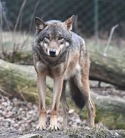
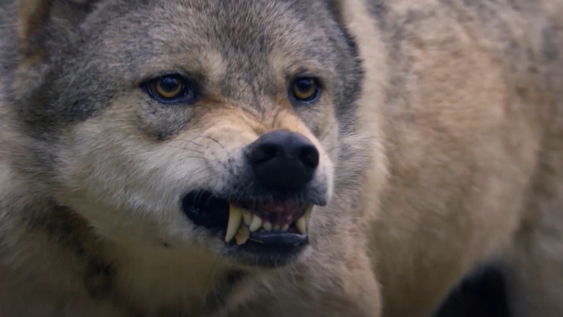

Vlk dravý (iné názvy: vlk obyčajný, vlk sivý alebo len vlk; lat. Canis lupus) je druh cicavca z čeľade psovitých (Canidae). Podľa Medzinárodnej únie na ochranu prírody a prírodných zdrojov vlk dravý patrí medzi najmenej ohrozené druhy, celková populácia je stabilná. Svorka má 6 až 8 členov. V Západných Karpatoch bola stopovaním zistená priemerná veľkosť svorky v zime 4,5 jedincov. Vo vlčej svorke je istá hierarchia - od alfy po omegu. Alfa pár má mláďatá a vedie svorku, žerie prvý a ostatní jedinci sú mu podriadení. Ďalej nasledujú ostatní dospelí jedinci a mláďatá. Na svorke vlkov je dosť zaujímavé, že vlci svoje mláďatá musia vyhodiť zo svorky. Mláďatá potom musia vytvoriť novú. Keď vlci lovia, vždy počkajú kým sa obeť unaví, až potom zaútočia. Najvyššie vo svorke stojí takzvaný Alfa pár ktorí tvorí samec a samica, zvyčajne tvorcovia celej svorky. Pod nimi sa nachádza Beta pár. Ostatní sú neutrálni členovia svorky a posledný je Omega. Vĺčatá tvoria "vlastnú malú svorku", a tak sa učia sociálnym návykom a chápaniu fungovania svorky. Rozlišuje sa asi 39 poddruhov vlka dravého, nie všetky sú však žijúce. Najbežnejší poddruh sa nazýva vlk dravý euráziský (Canis lupus lupus). Vlk sa považuje za priameho predka psa domáceho (Canis lupus familiaris), resp. predka, ktorý sa na genetickom základe psa podieľal najvýznamnejším dielom.
 